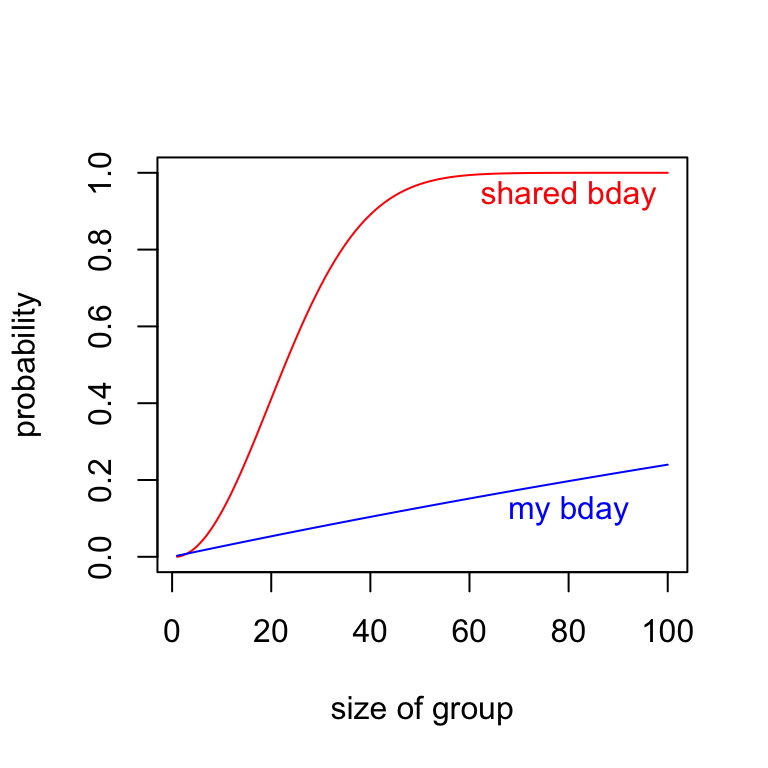
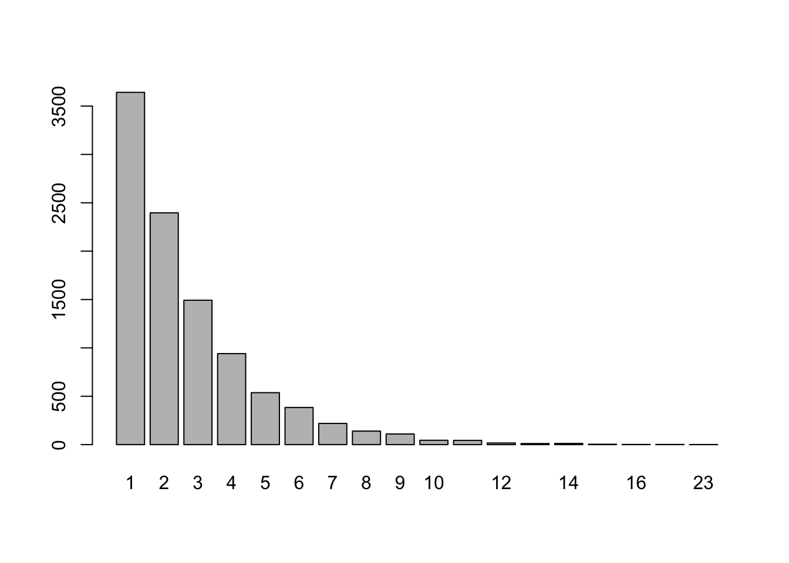

C Discrete Random Variables in R
In this chapter we use R to investigate discrete random variables. We can create discrete distributions from scratch, or access common distributions named in R, including uniform, binomial, negative binomial, Poisson, geometric, and hypergeometric distributions.
Let’s say a discrete random variable \(X\) has finite sample space and known probability function \(p(x)\). We often display this type of probability model via a table:
\[ \begin{array}{c|c|c|c|c|c} x & 5 & 6 & 7 & 8 & 9 \\ \hline p(x) & 0.1 & 0.1 & 0.3 & 0.4 & 0.1 \end{array} \] We can input this model into an R session by defining two vectors:
We can check in R that the two conditions for a valid probability have been met by this assignment:
- Each probability is non-negative:
Px >= 0= TRUE, TRUE, TRUE, TRUE, TRUE - The probabilities add to 1:
sum(Px)= 1
C.1 Expected Value of \(X\)
Recall if \(X\) is a discrete random variable with probability function \(p(x)\), then the expected value of \(X\) is \[E(X)=\sum_{\text{all }x}x\cdot p(x)\]
Having defined vectors \(X\) and \(Px\) in R, we calculate \(E(X)\) by running
## [1] 7.3Note: For those who have taken vector calculus sum(v*w) returns the dot product of v and w, aka the inner product. R has an alternative command for this dot product, which is v %*% w. So, sum(v*w) and v %*% w do the same thing, but I prefer the first option to remind me that the expected value is obtained as a sum over all \(x\) of some things.
C.2 Variance of \(X\)
Recall the variance of \(X\) is \[V(X) = E[(X-\mu)^2],\] where \(\mu = E(X)\). Alternatively, the variance can be computed via \[V(X) = E(X^2)-\mu^2.\]
So we can compute the variance of \(X\) in R as follows:
## [1] 1.21Or, alternatively, as follows:
## [1] 1.21C.3 Distribution Plots
R can offer some quick visualizations of probability distributions.
The following code will give the shape of the probability distribution (with a splash of color and plot title:)
C.4 Sampling
The following code draws a random sample of size 10 from our distribution.
## [1] 7 7 8 6 8 5 8 9 6 7If we take a large sample, and make a frequency plot of the results, it should be close to the shape of the Px plot above.

And we can also make a relative frequency plot for our sample, which should match the plot of the probability model itself, when our sample size is large.

C.5 Estimating Distributions via Simulation
Example C.1 (Flipping Coins with Fibonacci) Let \(X\) equal the number of flips required to observe heads on consecutive flips. For instance, \(X = 6\) in the flip sequence “T H T T H H”. The random variable \(X\) is discrete, taking on countably infinite values 2, 3, 4, \(\ldots\) .
The probability function for \(X\) is \[p(x) = \frac{F_{x+1}}{2^x} \text{ for } x = 2, 3, 4, \ldots,\] where \(F_n\) is the \(n\)th Fibonacci number. (\(F_n\) is defined recursively: \(F_1 = F_2 = 1\), and for \(n \geq 3\), \(F_n = F_{n-1}+F_{n-2}\).)
This requires some satisfying work, and we present that effort below.
We can also approximate the density function by simulation.
trials = 10000
results = c() #stores result
for (i in 1:trials){
flips = 0
consecutive_H = 0
while (consecutive_H<2){
flips = flips + 1 #recording flips made in this trial
consecutive_H = ifelse(sample(c("H","T"),1)=="H",consecutive_H+1,0)
}
results[i]=flips #updates results to include flips required for consec heads in this trial
}We note that the maximum number of flips it took to get consecutive Heads in these trials was max(results) = 50! So we don’t list the full table of results here, just the first 10:
## results
## 2 3 4 5 6 7 8 9 10 11
## 2509 1235 1291 932 801 571 502 417 323 269The relative frequencies of these results provide our estimate for the probability density function:
## results
## 2 3 4 5 6 7 8 9 10 11
## 0.2509 0.1235 0.1291 0.0932 0.0801 0.0571 0.0502 0.0417 0.0323 0.0269These values compare closely to the actual probability values \(F_{x+1}/2^x\):
| x | 2 | 3 | 4 | 5 | 6 | 7 | 8 | 9 | 10 | 11 |
| Rel_freq | 0.2509 | 0.1235 | 0.1291 | 0.0932 | 0.0801 | 0.0571 | 0.0502 | 0.0417 | 0.0323 | 0.0269 |
| p(x) | 0.2500 | 0.1250 | 0.1250 | 0.0938 | 0.0781 | 0.0625 | 0.0508 | 0.0410 | 0.0332 | 0.0269 |
C.6 Discrete Uniform Distribution
Definition C.1 If \(X\) is a finite set with size \(|X| = n\). The probability distribution defined by \[p(x) = \frac{1}{n}\] for all \(x \in X\) is called uniform.
In a uniform distribution, we will find over a large number of trials that each name comes up with about the same frequency.
Example C.2
Pick a random seal from the famous Eddington family: Otto, Ruth, Pluotika, Slarftel, Edgar and Bob.
To simulate the process of picking one seal at random from the family, a large number of times, we sample 1 element with replacement, a large number of times. The resulting frequency plot should look uniform:
results=sample(family,10000,replace=TRUE)
barplot(table(results),col="seagreen",xlab="seal",ylab="freq",main="Pick a seal, any seal!")
Way to go Ruth, you over achiever!
C.7 Important discrete random variables
The important, named discrete distributions we encounter in this class are built-in distributions in R:
- the binomial distribution is named
binom - the geometric distribution is named
geom - the negative binomial distribution is named
nbinom - the hypergeometric distribution is named
hyper - the Poisson distribution is named
pois
We use four commands to work with the named distributions. For a distribution named ___:
d___(x,...)| Density function, \(p(x)\)p___(q,...)| Cumulative probability, \(P(X \leq q)\)q___(p,...)| Quantiles, finds \(x\) such that \(P(X \leq x) = p\)r___(n,...)| Random sample of size \(n\) from the distribution
C.7.1 Binomial Distribution binom
The Scene
We have a sequence of Bernoulli trials: A chance experiment with two possible outcomes: success and failure, and the probability of success is \(p\), and the probability of failure is \(1-p\).
Let the random variable \(X\) denote the number of successes in \(n\) independent trials of this chance experiment. Then \(X\) is called a binomial random variable with parameters \(n\) and \(p\).
Notation
\(X \text{ is binom}(n,p)\) means \(X\) counts number of successes in \(n\) Bernoulli trials, when probability of success on any given trial is \(p\).
The space of \(X\) is \(x = 0, 1, \ldots, n\).
Probability function
For \(x = 0, 1, \ldots, n\), \[p(x)=\binom{n}{x}p^x(1-p)^{n-x}.\]
Sometimes it is convenient to let \(q = 1-p\) so \(q\) represents the probability of failure in a Bernoulli trial, in which case \(p(x) = \binom{n}{x}p^xq^{n-x}\)
The binomial distribution in R
C.7.1.1 dbinom() - density function
dbinom(2,5,.3)returns the probability of \(X=2\) successes in \(n=5\) trials in a binomail distribution where \(p = .3\) is the probability of success on each trial. That is,dbinom(2,5,.3)returns \[\binom{5}{2}(.3)^2(.7)^3.\]
## [1] 0.3087As a check:
## [1] 0.3087C.7.1.2 pbinom() - cumulative probability
pbinom(q,n,p)returns the cumulative probability \(P(X \leq q)\) for \(X \sim b(n,p)\): \[\sum_{x=0}^q p(x)=\sum_{x=0}^q\binom{n}{x}p^x(1-p)^{n-x}.\]
So pbinom(2,5,.3) should return \(P(X \leq 2)\) when \(X\) is \(b(5,.3)\):
## [1] 0.83692As a check:
## [1] 0.83692C.7.1.3 qbinom() - quantiles
qbinom(.95,100,.5)returns the value in the \(b(100,.5)\) distribution that marks the 95th percentile: the value below which one finds 95% of the distribution:
## [1] 58In other words, if \(X\) is \(b(100,.5)\) (e.g., flip a fair coin 100 times and count how many heads you get), about 95% of the time you would find \(X \leq 58\).
We can check this:
## [1] 0.955687C.7.1.4 rbinom() - sampling
rbinom(10,20,.4)will generate a random sample of size 10 drawn from a \(b(20,.4)\) distribution. This sample is stored as a vector
## [1] 7 7 3 6 8 9 8 7 8 7We can use r___ to run simulations, and to visualize the shape of a distribution.
For a discrete distribution we can use barplot() and table() to tabulate the results. The table() command gives the total counts for each possible outcome, and the barplot() command applied to a table visualizes those counts.
sim_data = rbinom(1000,20,.4) # draw a random sample of size 1000 from the binomial distribution b(20,.4).
table(sim_data)## sim_data
## 2 3 4 5 6 7 8 9 10 11 12 13 14 15
## 1 10 42 69 136 172 181 145 109 75 27 21 10 2
C.7.2 Geometric Distribution geom
The Scene
As with the binomial distribution, we consider a sequence of Bernoulli trials (probability of success is \(p\), probability of failure is \(q = 1-p\)). Instead of counting how many successes in \(n\) trials, we are interested in counting the number ot trials until our first success.
Assume we repeat the experiment until we observe a success. Let the random variable \(X\) denote the number of trials up to and including this first success. Then \(X\) is called a geometric random variable with parameter \(p\).
Notation
\(X\) is geom\((p)\).
The space of \(X\) is \(x = 1, 2, \ldots\)
Probability density function
For \(x = 1, 2, 3, \ldots\), \[p(x)= q^{x-1}p.\]
The geometric distribution in R counts failures, not total trials.
In R geom counts the number of failures until the first success, not the total number of trials up to and including the first success.
As with the binom distribution, we can use the d___, p___, q___, and r___ commands to determine probabilities for particular values of x, cumulative probabilities, quantiles, and random samples, respectively.
dgeom(4,.3)gives the probability of seeing 4 failures before the first success in a Bernoulli trial in which \(p = .3\)
## [1] 0.07203
pgeom(4,.3)gives the probability of seeing 4 or fewer failures before the first success in a sequence of Bernoulli trials in which \(p = .3\)
## [1] 0.83193and the following line gives the probability of seeing more than 4 failures prior to the first success:
## [1] 0.16807Example C.3
Roll a fair 6-sided die until a four comes up, and let \(X\) denote the rolls up needed to see that first four. Repeat this game 10,000 times, and plot the frequency distribution for \(X\).
Strategy:
- Note that this game is a Bernoulli trial, where “success” means rolling a 4 and “failure” means not rolling a four. So \(p = 1/6\), and \(q = 5/6\).
- Take a random sample of size 10000 from the
geomdistribution in R with thergeom()method (which records the number of failures, not the number of trials). - Add one to each value in the sample to get the number of trials.
- barplot the table!

OMG notice from the barplot that one depressing game required 64 rolls to see my first 4.
C.7.3 Negative Binomial Distribution nbinom
The Scene
Again, we consider a sequence of Bernoulli trials (probability of success is \(p\), probability of failure is \(q = 1-p\)).
We let \(X\) denote the number of trials in the sequence up to and including the \(r\)th success, where \(r \geq 1\) is a positive integer. Then \(X\) is called a geometric random variable with parameters \(p\) and \(r\).
For instance, if we set \(r = 3\), then \(X = 7\) for the following sequence of Bernuoulli trials (\(S\) stands for success, \(F\) for failure) \[F F F S F S S F S F F S \ldots \] since the third \(S\) occurs on the 7th trial.
In the case \(r = 1\) the negative binomial distribution is the geometric distribution.
Notation: \(X\) is Nb\((r,p)\)
The space of \(X\) is \(x = r, r+1, r+2, \ldots\)
Probability density function
For $x = r, r+1, r+2, $, \[p(x)= \binom{x-1}{r-1}p^{r}q^{x-r}.\]
Example C.4 A study indicates that an exploratory oil well drilled in a particular region should strike oil with probability 0.2. Find the probability that the third oil strike comes on the 10th well drilled.
Here, if \(X\) equals the number of wells drilled until the company gets its third strike, then \(X\) is Nb(3,.2), and the answer to this question is \(P(X=10)\) which is \[P(X=10)=\binom{9}{2}0.2^{3}.8^{7}.\]
## [1] 0.0604In R this distribution is accessed using nbinom, but this distribution, like geom, focuses on the number of failures, not total trials. If we want to know the probability that our third success occurs on the 10th trial, this is equivalent to the probability of having 10-3 = 7 failures before getting our third success, which can be computed in R as
## [1] 0.06039798Visualizing \(X \sim Nb(3,.2)\)
r = 3 #going until we get 3rd success
trials = 10000 #draw a random sample of this size
p = .2 #probability of success on any given Bernoulli trial
failure_count = rnbinom(trials,r,p)
barplot(table(failure_count),main="failures before 3rd success")
C.7.4 Hypergeometric Distribution hyper
The Scene
A finite population has \(N\) elements that possess one of two characteristics. Say we have a jar of \(N\) marbles, \(m\) of them are red and \(n\) of them are black (so \(m + n = N\)). We draw a sample of size \(k\), and let \(X\) denote the number of red marbles in the jar.
Then \(X\) is called a hypergeometric random variable with parameters \(m\), \(n\), and \(k\).
Notation: \(X\) is hyperg\((m,n,k)\)
The space of \(X\) is \(x = 0,1,2,\ldots,k\) subject to the restriction that \(x \leq m\) and \(k - x \leq n\).
Probability density function
The probability function is \[p(x)= \frac{\binom{m}{x}\binom{n}{k-x}}{\binom{m+n}{k}}.\]
In R Use hyper.
Example C.5
A group of 6 seals and 4 pelicans hang at the beach, and they select a random subset of size 5 to play beach volleyball. Let \(X\) = the number of pelicans chosen.
Here, \(X\) is hypergeometric with parameters \(m = 4\) (4 pelicans), \(n = 6\) (6 seals) and \(k = 5\) (sample size).
The probability that \(X = 2\) is
## [1] 0.4761905We can also use the built in command dhyper(x,m,n,k)
## [1] 0.4761905Example C.6 (Good Potatoes Bad Potatoes in R)
A truck has 500 potatoes, 50 of which are bad, the rest are good. We sample 10. What is the probability that more than 3 are bad?
If \(X\) equals the number of bad potatoes in the sample, then \(X\) is hypergeometric with parameters \(m = 50\), \(n=450\), and \(k = 10\).
So \[P(X > 3) = 1 - P(X \leq 3)\]
which can be calculated with the cumulative probability command phyper:
## [1] 0.01186118C.7.5 Poisson Distribution pois
The Scene
The Poisson probability distribution can provide a good model for the number of occurrences \(X\) of a rare event in time, space, or some other unit of measure. A Poisson random variable \(X\) has one parameter, \(\lambda\), which is the average number of occurrences of the rare event in the indicated time (or space, etc.)
Notation: \(X\) is Poisson\((\lambda)\).
The space of \(X\) is \(x = 0,1,2,\ldots,\) (countably infinite!)
Probability density function
The probability function is \[p(x)=\frac{\lambda^x}{x!}e^{-\lambda}\]
In R use pois.
Example C.7
Suppose \(X\) is Poisson(5). Determine \(P(X \geq 10)\).
Note: \(P(X \geq 10) = 1-P(X < 10)= 1-P(X \leq 9)\). So, using ppois() we have
## [1] 0.03182806Example C.8
The number \(X\) of typos on a page in a textbook follows a Poisson distribution with an average number of 2 typos per page. (a) If you pick a page at random, what is the probability it contains 0 typos? (b) According to this model, 99% of the pages have no more than how many typos?
## [1] 0.1353353## [1] 6C.7.5.1 Poisson Process
Again, suppose \(X\) denotes the number of occurrences of a rare event in time, space, or some other unit of measure.
Definition C.2 The process by which an event happens is called a Poisson process if the following holds:
- The dimension over which \(X\) is measured can be subdivided into \(n\) small pieces, within which the event can occur at most once.
- In each small piece, the probability of seeing one occurrence is the same, say \(p\), and \(p\) is proportional to the length of the sub-interval (as \(n\) grows, \(p\) shrinks, but \(np\) remains constant).
- Occurrences in all the small pieces are independent from one another.
In a Poisson process recording the number of occurrences of the event in each small piece is a Bernoulli trial (1 occurrence with probability \(p\), and 0 occurrences with probability \(1-p\)), and if there are \(n\) small pieces, then \(X\) is approximately \(b(n,p)\).
For large \(n\), if we let \(\lambda = np\), Poisson\((\lambda)\sim b(n,p)\).
Compare the table of probabilities for \(b(10,.4)\), \(b(40,.1)\), and \(b(400,.01)\) with those of a Poisson(4) distribution. For all 3 binomial distributions \(np = 4\), so as \(n\) gets larger, \(b(n,p)\) should be a better approximation to Poisson(4):
| x | binom(10,4) | binom(40,.1) | binom(400,.01) | pois(4) |
|---|---|---|---|---|
| 0 | 0.0060 | 0.0148 | 0.0180 | 0.0183 |
| 1 | 0.0403 | 0.0657 | 0.0725 | 0.0733 |
| 2 | 0.1209 | 0.1423 | 0.1462 | 0.1465 |
| 3 | 0.2150 | 0.2003 | 0.1959 | 0.1954 |
| 4 | 0.2508 | 0.2059 | 0.1964 | 0.1954 |
| 5 | 0.2007 | 0.1647 | 0.1571 | 0.1563 |
| 6 | 0.1115 | 0.1068 | 0.1045 | 0.1042 |
| 7 | 0.0425 | 0.0576 | 0.0594 | 0.0595 |
Example C.9 (Rutherford/Geiger Data)
In a paper published in 1910 entitled “The Probability Variations in the Distribution of \(\alpha\)-particles”, Rutherford and Geiger reported data that counted the number of “scintillations” in 72 second intervals caused by radioactive decay of a quantity of the element polonium.
Here are the data:
results=rep(0:14,c(57,203,383,525,532,408,273,139,45,27,10,4,0,1,1))
trials=length(results)
table(results)## results
## 0 1 2 3 4 5 6 7 8 9 10 11 13 14
## 57 203 383 525 532 408 273 139 45 27 10 4 1 1barplot(table(results)/trials,
ylim=c(0,.25),
ylab="rel. freq",
xlab="scintillations",
main="Rutherford/Geiger Data")Here’s the mean of the data (which gives average # of scintillations in 72 seconds):
## [1] 3.871549Let’s compare the observed relative frequencies to the theoretical probabilities associated with a Pois(3.87) distribution:
| x | rel_freq | pois_prob |
|---|---|---|
| 0 | 0.0219 | 0.0209 |
| 1 | 0.0778 | 0.0807 |
| 2 | 0.1469 | 0.1562 |
| 3 | 0.2013 | 0.2015 |
| 4 | 0.2040 | 0.1949 |
| 5 | 0.1564 | 0.1509 |
| 6 | 0.1047 | 0.0973 |
| 7 | 0.0533 | 0.0538 |
| 8 | 0.0173 | 0.0260 |
| 9 | 0.0104 | 0.0112 |
| 10 | 0.0038 | 0.0043 |
| 11 | 0.0015 | 0.0015 |
| 12 | 0.0000 | 0.0005 |
| 13 | 0.0004 | 0.0001 |
| 14 | 0.0004 | 0.0000 |